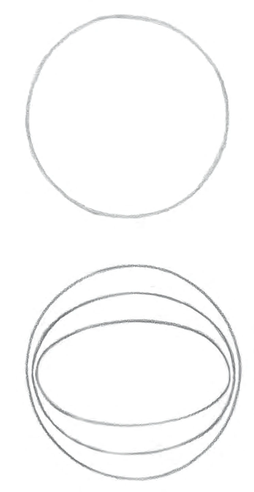

4º ano · 45 min · P4-01
Do passeio circular à elipse
Comparar círculo e elipse por mudanças de direção e simetria.
Antes de começar
Prontidão: Reconhecer caminhos abertos e fechados; seguir um contorno com o dedo.
Materiais: Lã, papel, giz de cera e contornos preparados de círculo e elipse.
Divida em sessões menores se necessário. Um adulto deve manusear ferramentas pontiagudas; peças prontas, descrições orais e contornos são alternativas válidas.
Ideia de ensino
O círculo mantém distância constante de um centro. Uma elipse não circular é mais comprida em um eixo do que no outro; as curvas mais fechadas ficam nas pontas do eixo maior. Um desenho oval à mão livre é um esboço, não automaticamente uma elipse exata.
Observe os diagramas do livro

Percorra os dois caminhos com o dedo. A circunferência mantém uma distância do centro; a elipse em geral não. O oval ilustrado é um estudo de forma, não um molde de construção.
Siga as medidas escritas e as etapas da aula; estas ilustrações redimensionadas não são moldes para medir.
Ritmo da aula
- 5 min · Retome caminhos retos e curvos. Mova um brinquedo uma vez pelo círculo de lã.
- 15 min · Transforme o laço em oval comprido. Compare onde a direção muda suavemente e onde a curva fica mais fechada. Desenhe os dois caminhos à mão livre.
- 20 min · Use contornos matemáticos preparados de círculo e elipse. Dobre pelo centro para testar metades coincidentes. Marque os dois eixos da elipse e compare distâncias do centro ao contorno.
- 5 min · Descreva uma semelhança e uma diferença; repita de memória amanhã.
Tente antes de revelar a resposta
Uma elipse tem eixos completos de 12 cm e 8 cm. Quais são os semieixos?
Revelar raciocínio e resposta
6 cm e 4 cm: tome a metade de cada comprimento.
Todas as distâncias do centro ao contorno coincidem nessa elipse?
Revelar raciocínio e resposta
Não: 6 cm e 4 cm já dão comprimentos diferentes.
Quantos eixos de reflexão tem uma elipse não circular?
Revelar raciocínio e resposta
Dois: o maior e o menor. Um círculo tem infinitos.
O que observar
Observe uma explicação ligando percurso, desenho e mudança de direção.
Pergunte: O que mudou? O que permaneceu? Como conferir? Avalie desenho, modelo e explicação separadamente do capricho.
Apoio
Use movimento sentado com dedo ou brinquedo; use contornos prontos para dobrar.
Amplie quando houver prontidão
Compare o círculo como caso de eixos iguais, sem exigir fórmulas de elipse.
Conexões
Caminhos curvos e caminhos retos → Continue no curso existente · G5-01
Fonte e lacuna abordada
Acrescenta a comparação entre movimento e desenho de círculo e elipse.
Ernst Schuberth · Geometry Lessons in the Waldorf School, Volume 2 · PDF 14–22. Estímulo temático; atividades, exemplos e modelos esquemáticos são originais. Diagramas adicionais do livro são creditados individualmente.
Ron Jarman · Teaching Waldorf Mathematics in Grades 1–8 · Markdown fornecido de 249 páginas, marcadores do PDF capturado 73–75,195. As seções de geometria e a visão geral por ano foram revistas diretamente. As referências são desta transcrição, não das páginas Kindle nem da transcrição anterior de 300 páginas. O OCR pode danificar fórmulas e omitir figuras; os exemplos aqui são originais e conferidos independentemente.
Atividades originais; a sequência por ano é flexível. Desenhos e explicações precisam de avaliação humana. Estas páginas não salvam progresso.